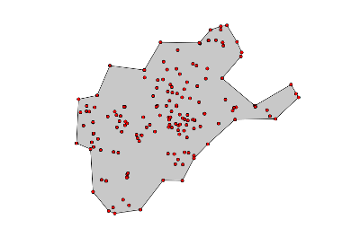

DESCRIPTION
v.concave.hull creates a concave hull around points. Contrary
to a convex hull, a concave hull can describe the shape of a point cloud.
EXAMPLE
Creating a convex and a concave hull around schools_wake in the
North Carolina sample dataset:
v.hull in=schools_wake out=schools_wake_convex
v.concave.hull in=schools_wake out=schools_wake_concave
Convex hull around schools:

Concave hull around schools:

SEE ALSO
v.hull,
v.buffer,,
v.kernel
AUTHOR
Markus Metz
Last changed: $Date$